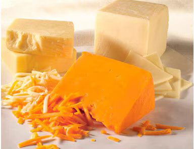

Brood
DAGELIJKS VERS GEBAKKEN EN BESCHIKBAAR IN DE MATEN 15 CM EN 30 CM. WIJ BIEDEN: Bruin Italian Herb & Cheese Glutenvrij Meerzaden Sesam Tortilla Wrap (tomaat basilicum)

Let op, de beschikbaarheid van producten kan verschillen per restaurant. Kijk bij jouw lokale Subway® welke soorten brood, groenten en sauzen beschikbaar zijn.
DAGELIJKS VERS GEBAKKEN EN BESCHIKBAAR IN DE MATEN 15 CM EN 30 CM. WIJ BIEDEN: Bruin Italian Herb & Cheese Glutenvrij Meerzaden Sesam Tortilla Wrap (tomaat basilicum)
Niets kan tippen aan onze heerlijke selectie kazen, sauzen en groenten. Ontdek ze allemaal!
Kies uit: American Mozzarella Pepperjack Roomkaas
Kies uit alle frisse groenten die SUBWAY® te bieden heeft. Verse groenten: Gekarameliseerde Rode ui Komkommer Mais Rode Paprika Rode ui Semi-gedroogde tomaten Sla Tomaat Andere opties zijn: Augurk Gebakken Uitjes Jalapeño's Zwarte olijven
Maak je Sub of salade af met een van onze heerlijke sauzen. Kies uit: Hickory smoked BBQ saus Pesto Mayonaise Southwest Chipotle Hot saus Sweet Onion Truffelsaus Vegan knoflook aioli Whole Grain Honey Mustard